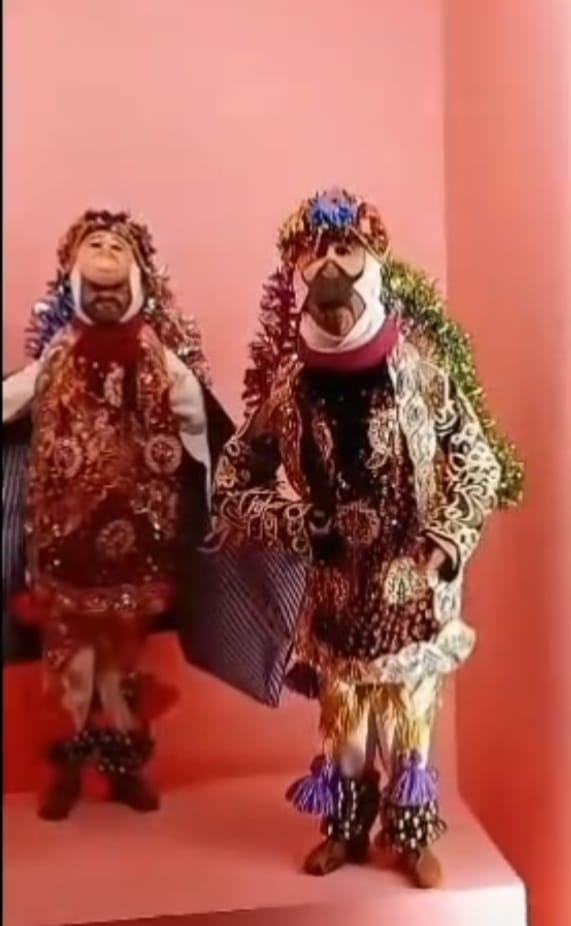

El Museo de Arte Popular Valle de Bravo es un espacio cultural ubicado en el centro de este Pueblo Mágico, dedicado a conservar y exhibir el legado artesanal de distintas regiones de México. Resguarda una colección privada de la Fundación Mama Viña y Oscar, destacando piezas de grandes maestros artesanos en un ambiente íntimo y cuidadosamente curado. Imagen de Museo de Arte Popular Valle de Bravo
Horarios
*Abierto: miércoles a domingo, 10:00–18:00
*Cerrado: lunes, martes, 24, 25 y 31 de diciembre, y 1 de enero
* Reservaciones y acceso:
Entrada gratuita
Las visitas son solo guiadas, en grupos de 4 personas por recorrido. Se debe enviar un mensaje con nombre, fecha y hora sugerida dentro del horario para agendar la visita y cada grupo es acompañado por un guía y se aplican protocolos para evitar aglomeraciones

*¿Qué encontrarás en la colección?
*El recinto destaca por su museografía temática y salas ambientadas con música propia, ofreciendo un recorrido por diversas tradiciones del país:
*Alfarería y barro: Piezas representativas de Metepec (como un mapa de la República Mexicana elaborado en barro), así como cerámica de Tlaquepaque y Tonalá.
*Alebrijes y cartonería: Una sala dedicada a alebrijes de madera tallada de Oaxaca con vista panorámica desde un nivel superior, escenas tradicionales en cartón con movimiento y un alebrije virtual interactivo.
*Arte wixárika y textiles: Figuras emblemáticas como venados forrados en chaquira multicolor, textiles bordados, cuadros con incrustaciones de concha y una sección inspirada en la cocina tradicional mexicana.
*Acceso y recorridos: La entrada general y los recorridos guiados (de 30 a 40 minutos) son gratuitos. Las visitas se organizan en grupos pequeños (alrededor de 4 personas) acompañados por un guía que explica el origen y técnica de cada obra.
*Visitas privadas: Si deseas un recorrido privado con costo, es necesario reservar con al menos 24 horas de anticipación a través de su sitio web oficial o por WhatsApp al número de contacto.
*Recomendaciones: Es un lugar ideal para visitar en familia y con niños, aunque conviene considerar que no cuenta con estacionamiento propio ni restaurante en sus instalaciones.